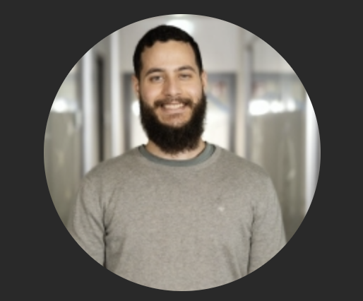

Enmanuel Rodriguez

Summary
I am a hardworking and dedicated individual with experience in quality assurance.
Education
- Bachelor of industrial Engineering - APEC University (2014-2019)
Work Eperience
Skills
- Cypress: ⭐⭐⭐⭐
- Postmand: ⭐⭐⭐⭐
- jmeter: ⭐⭐
- Microsoft Office Suite: ⭐⭐⭐⭐
- Organizational skills: ⭐️⭐️⭐️⭐️
Certifications
- Certified Tester Foundation Level - ISTQB (Septiember 2022)
Other